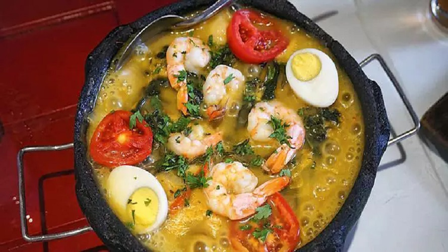

PRATIQUEIRA FRITA
-

-
- 1,5 Kg de pratiqueira (ou a quantidade que achar necessária)
- 2 unidades de limão com bastante suco
- 500 g de trigo (pode mudar para farinha caso queira mais crocante)
- 1 garrafa de óleo
- Sal a gosto
INGREDIENTES
MODO DE PREPARO
Limpe bem o peixe e tire as escamas caso ele ainda não esteja pronto.
Faça cortes transversais nos dois lados e tempere com o suco de 2 limões e sal.
Reserve por 15 minutos para pegar o tempero. (Dica: Pode acrescentar outros ingredientes ao tempero, tais como pimenta do reino) Após o tempo indicado, coloque óleo abundante em um frigideira e leve ao fogo médio.
Seque ligeiramente o peixe com papel toalha, envolva no trigo e frite no óleo bem quente, alternando de um lado para o outro, até ficar dourado e crocante.
(Dica: Vire o peixe apenas quando a parte virada para o óleo já estiver bem frita, caso contrário, irá desmanchar) Quando estiver bem dourado, retire e coloque em um prato com papel toalha para retirar a oleosidade.
CALDEIRADA DE FILHOTE
- 
-
- 4 postas de filé de filhote (pode ser filé de pescada amarela)
- 8 camarões sem cabeça
- 2 ovos cozidos
- 2 tomates cortados em pedaços grandes e sem sementes
- 1 cebola grande cortada
- ½ pimentão verdes cortados em pedaços grandes
- ½ pimentão vermelho cortados em pedaços grandes
- Suco de 1 limão
- 1 maço de jambu
- Pimenta de cheiro a gosto
- Sal a gosto
- Azeite de oliva a gosto
- Cheiro-verde a gosto
- ASalsinha e cebolinha a gosto
INGREDIENTES
MODO DE PREPARO
Lave o peixe e tempere com sal e limão Deixe descansar por 10 minutos para pegar gosto Coloque o tucupi com a chicória na panela para ferver Em uma panela de barro, coloque o azeite, o alho, a cebola, os pimentões, os tomates e refogue por alguns minutos Acrescente o coentro e a pimenta de cheiro Depois, coloque o tucupi já pronto Em uma frigideira (ou panela com óleo quente) frite o peixe temperado com sal e limão, passado pela farinha de trigo para ficar mais firme, e reserve Coloque os peixes dentro da panela onde foi feito o molho/refogado Acrescente os camarões, os ovos e, por último, o jambu Ferva por mais ou menos 5 minutos.
Pode servir com arroz branco e pirão de farinha de mandioca
MOQUECA DE PESCADA AMARELA
-
- 6 (postas) de Pescada Amarela (cerca de 150 g cada)
- 3 tomates
- 1 pimentão amarelo grande
- 1 pimentão verde grande
- 1 ½ cebola
- 2 dentes de alho pequenos
- 2 pimentas dedo-de-moça pequenas
- 1 pimenta de cheiro
- 8 ramos de coentro (folhas e talos)
- 200 ml de leite de coco
- ¼ de xícara (chá) de azeite de dendê
- 2 colheres (sopa) de azeite
- sal a gosto
- folhas de coentro a gosto para servir
INGREDIENTES
MODO DE PREPARO
Lave e seque os pimentões, os tomates, as pimentas e o coentro.
Tempere o peixe com sal a gosto.
Corte os pimentões ao meio, descarte as sementes e corte cada metade em quadrados de 3 cm. Corte os tomates em quartos, descarte as sementes e corte cada quarto ao meio na diagonal. Descasque e corte a cebola em cubos de 2 cm. Descasque e pique fino o alho. Fatie a pimenta de cheiro em rodelas.
Corte a pimenta dedo-de-moça ao meio, raspe as sementes com a ponta da faca e pique fino as metades. Dica: para evitar acidentes com dedos apimentados nos olhos, passe óleo ou azeite nas mãos depois de cortar as pimentas — a gordura dissolve a capsaicina, substância responsável pelo ardor. Depois, lave as mãos.
No liquidificador, bata o leite de coco com o azeite de dendê e ½ colher (chá) de sal por 1 minuto até ficar bem emulsionado — assim o caldo da moqueca fica mais aveludado e a gordura do dendê e do coco não se separam do líquido.
Leve uma panela grande (uma moquequeira, ou frigideira de borda alta) ao fogo médio para aquecer. Regue com o azeite, adicione a cebola, tempere com uma pitada de sal e refogue por 3 minutos até murchar. Junte os pimentões e refogue por mais 3 minutos. Acrescente o alho e as pimentas e mexa por 1 minuto para perfumar.
Abaixe o fogo, junte o coentro e o leite de coco batido com dendê. Adicione os tomates e misture bem. Com uma pinça, coloque as postas de peixe entre os legumes — assim o peixe fica parcialmente imerso pelo caldo para cozinhar.
Tampe a panela e deixe cozinhar por 15 minutos, ou até o peixe ficar cozido, mas ainda úmido, e os legumes macios.
Sirva a seguir com folhas de coentro a gosto.